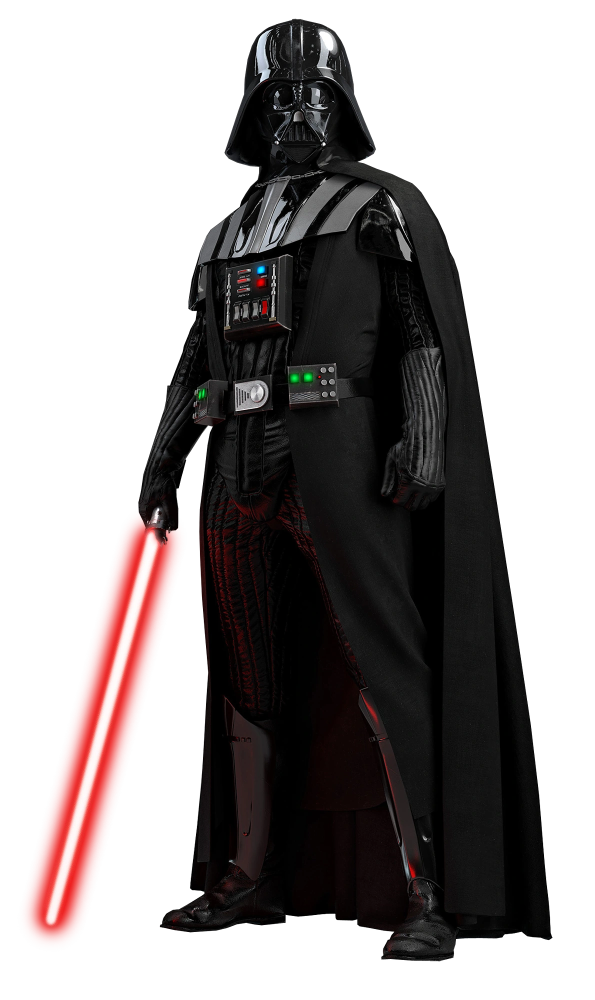

Obi-Wan Kenobi é um mestre Jedi da saga Star Wars, conhecido por sua sabedoria, habilidade em combate e forte ligação com a Força. Ele foi aprendiz de Qui-Gon Jinn e, depois, tornou-se mentor de Anakin Skywalker, desempenhando um papel fundamental em sua formação. Após a queda de Anakin para o lado sombrio, Obi-Wan continua sua missão protegendo Luke Skywalker, filho de Anakin, garantindo a esperança para o futuro. Ao longo da história, ele se destaca como um dos Jedi mais importantes, representando equilíbrio, disciplina e coragem.
Quais seus feitos?
Obi-Wan Kenobi realizou diversos feitos importantes ao longo da saga Star Wars, destacando-se como um dos Jedi mais habilidosos e estratégicos. Entre suas principais conquistas, derrotou o Sith Darth Maul ainda jovem, vingando a morte de seu mestre Qui-Gon Jinn. Durante as Guerras Clônicas, atuou como general da República, liderando tropas em diversas batalhas e demonstrando grande capacidade tática. Também foi responsável por treinar Anakin Skywalker, que se tornaria um dos Jedi mais poderosos, embora posteriormente tenha se voltado para o lado sombrio. Em um confronto decisivo, Obi-Wan derrotou Anakin, já como Darth Vader, impedindo um mal ainda maior. Além disso, viveu anos em exílio protegendo Luke Skywalker, garantindo a continuidade da esperança na galáxia.
Darth Vader

Quem é?
Darth Vader é um dos principais vilões da saga Star Wars e um dos personagens mais icônicos do cinema.
Darth Vader na verdade é Anakin Skywalker, um antigo Jedi muito poderoso que acabou se voltando para o lado sombrio da Força. Ele foi treinado por Obi-Wan Kenobi, mas, após escolhas influenciadas por medo, raiva e desejo de poder, passou a servir o Império.
Como Vader, ele se torna um guerreiro temido, conhecido por sua armadura preta, respiração mecânica e grande habilidade com a Força. Ao longo da história, ele atua como braço direito do imperador e participa de diversas batalhas importantes.
Apesar de ser um vilão, sua história também envolve redenção, mostrando que ainda existe bondade dentro dele.
Quais seus feitos?
Um dos feitos mais marcantes de Darth Vader ocorre durante a chamada Ordem 66. Nesse momento, ele, ainda como Anakin Skywalker já voltado ao lado sombrio, lidera o ataque ao Templo Jedi, eliminando diversos Jedi e praticamente acabando com a Ordem Jedi.
Esse evento é crucial para a ascensão do Império e marca definitivamente sua transformação em Darth Vader, consolidando-o como um dos personagens mais temidos da galáxia.